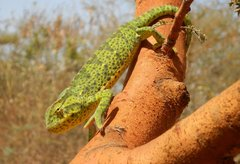

El camaleón de Senegal , Chamaeleo senegalensis , es una especie de camaleón nativa de África occidental . Su área de distribución incluye Senegal , Mali , Nigeria y Camerún , y vive en una sabana húmeda . Debido a su amplia gama y población desconocida, el camaleón de Senegal figura como Preocupación menor en la Lista Roja de la UICN . Sin embargo, puede verse amenazado por el comercio de mascotas .
Caracteristicas